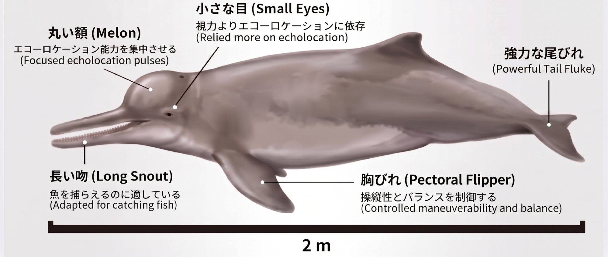
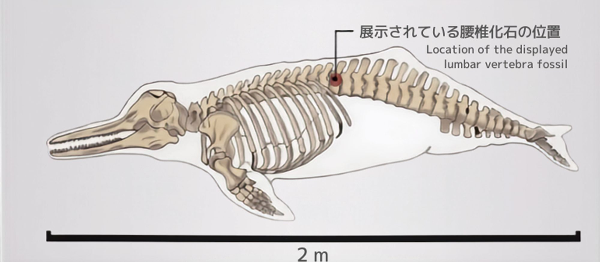
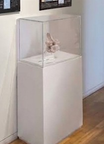
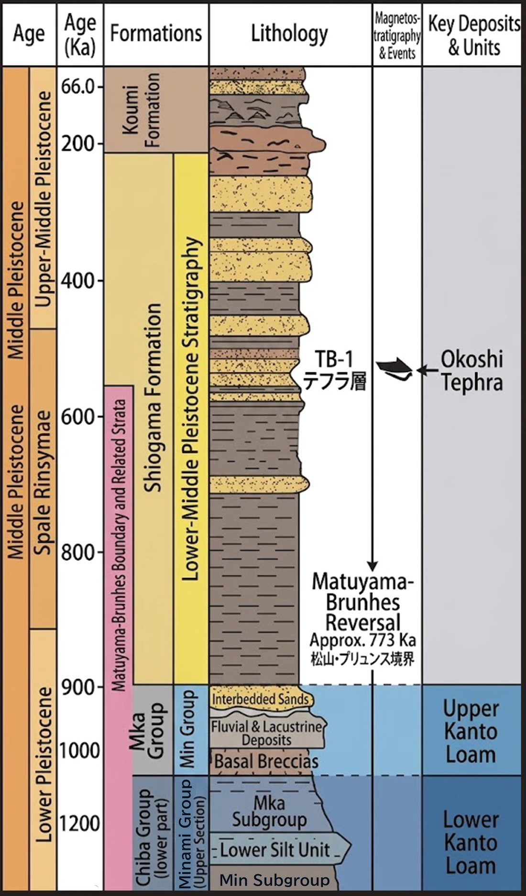
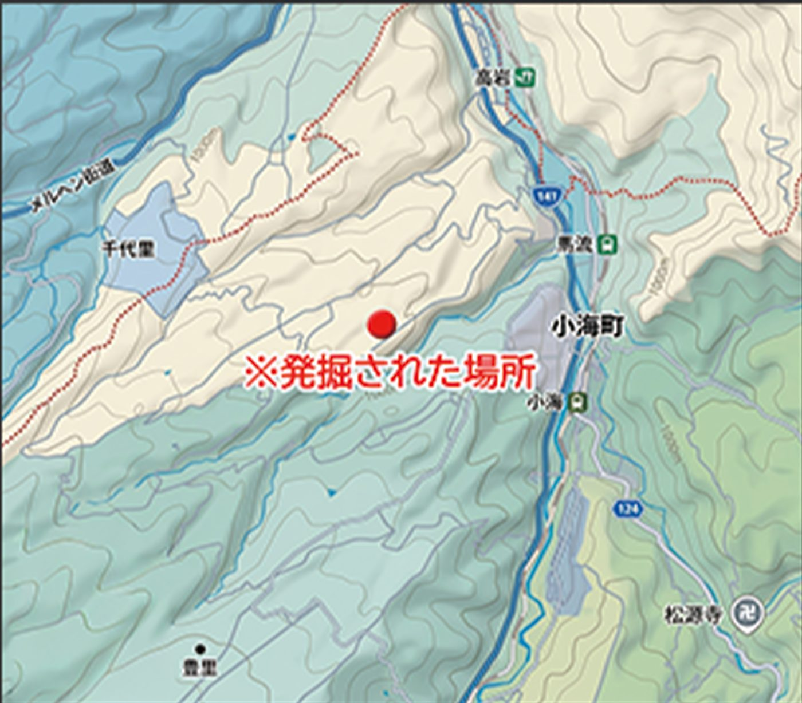
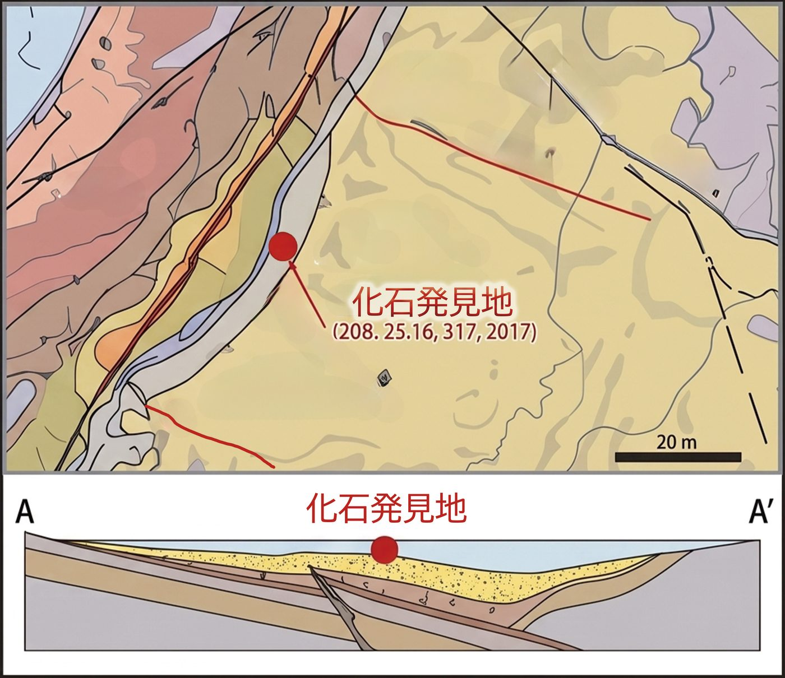
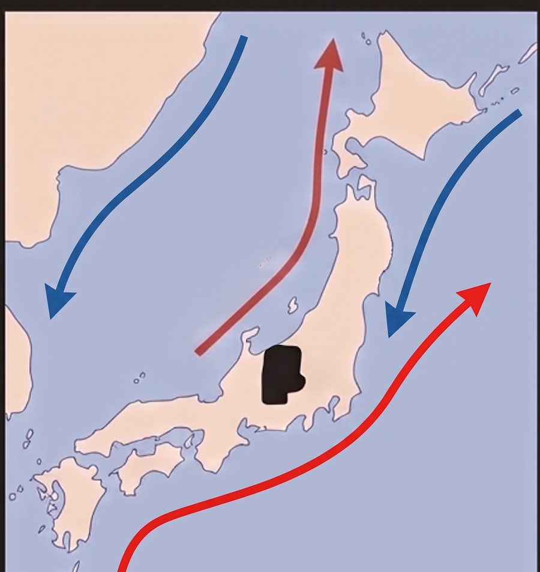

01海なき町のイルカ
About the Specimen
海なき町に、
イルカがいた。
標高1,100m、山々に囲まれた長野県南佐久郡小海町。その周辺の地層から発見されたとされるのが、小型ハクジラ類「コウミカワイルカ」である。
新潟県の日本海から信濃川・千曲川を遡上したと考えられるこのイルカは、山深い小海町に残された海洋生物の痕跡として、古地理を紐解く上で重要な手がかりとなる。展示では、その腰椎化石の複製と、生態・地層・古環境を伝える資料パネルを通して、伝承「くじらの夫婦」の向こう側にある「実体」を静かに差し出す。
02からだのつくり
Characteristics
音で「見る」、
川のハンター。
輪をタップすると、その部位へぐっとズームして解説が開きます。額（メロン）を選ぶと、エコーロケーションの音が前方へ広がります。

コウミカワイルカの特徴と生態 — 資料パネルよりILLU-A-1407
03展示されている腰椎化石
Fossilized Lumbar Vertebra
背骨の、
たったひとつの骨から。
地層の下に、骨が眠っています。指やマウスで地面をこすって、化石を掘りだしてみましょう。

!発見！ 腰椎化石 MLMM 10452
化石化したコウミカワイルカの椎骨 ／ 赤い印＝展示されている腰椎化石の位置（Location of the displayed lumbar vertebra fossil）MLMM 10452
SPECIMENFossilized Koumi River dolphin vertebra (Ancient Inia-like species) — Lumbar Vertebra, Late Miocene
この標本は、長野県南佐久郡小海町周辺の地層から発見された小型ハクジラ類（通称：コウミカワイルカ）の複製であり、物の特徴が伝わるように展示している。
近年の研究により、魚類を捉える機能に関連している構成と、複雑な骨組織の形成の一部であることが示唆されている。多孔質な骨の構造は、哺乳類特有の軽量かつ強靭な脊椎の特徴をよく残している。

会場では、陶土による骨として透明なアクリルケースに収め、通路の先に静かに佇ませている。
展示の小部屋を見る →人の背丈とくらべると
04小海層の層序学と堆積環境
Paleogeography and Stratigraphy

小海層の地層柱状図Stratigraphic column
砂と泥が交互に積もった、
海の記録。
化石群集および層序学的解析に基づき、本層は約1100万年前〜530万年前（後期中新世）に形成された堆積物であると推定される。
作成された地層柱状図は、砂岩と泥岩の互層を主体とする地層の連続性を示しており、浅海から半深海へと移行するダイナミックな堆積プロセスと、当時の豊かな古海洋環境を良好な状態で記録している。
PALEOGEOGRAPHY AND STRATIGRAPHYBased on fossil assemblages and stratigraphic analysis, this formation is estimated to comprise deposits formed during the Late Miocene (approx. 11.0–5.3 Ma). The strata, predominantly composed of alternating beds of sandstone and mudstone, demonstrate continuous sedimentation. They record a dynamic depositional process transitioning from a shallow marine to a hemi-pelagic environment, excellently preserving the rich paleo-oceanic conditions and coastal ecosystems of that era.
- 年代約1100万〜530万年前（後期中新世）
- 主な岩相砂岩と泥岩の互層
- 堆積環境浅海 → 半深海へと移行
- 記録当時の豊かな古海洋環境と沿岸生態系
05化石発見地
Discovery Site


小海町周辺 ／ ※発掘された場所Fig. — Site
赤い丸印の、
その地層の下に。
化石が見つかったのは、小海町の中心部から西へ入った丘陵の地層。地形図の上では、千曲川に沿って伸びる谷あいの町のすぐそばに、赤い印が打たれている。
地質断面図A-A'における地層の分布と地質構造。図中の赤い丸印は、主要な化石産出地点（化石発見地）を示している。
06遡上の道のり
From the Sea of Japan
日本海から、
山の町へ。
新潟県の日本海から信濃川・千曲川を遡上したと考えられている。山深い小海町に海洋生物の痕跡が存在することは、古地理を紐解く上で重要な手がかりとなる。スクロールに合わせて、イルカが川をさかのぼります。
日本海 → 信濃川 → 千曲川 → 小海（模式図・距離や標高は正確な縮尺ではありません）Route
くじらの夫婦
かつて千曲川を遡って海を目指したという「くじらの夫婦」の伝承。展示『二重の遠景』は、この伝承と、八ヶ岳崩壊による湖沼群の生誕という地質の歴史とを重ね合わせる。
伝承と実体のあいだ
資料パネルと陶芸の骨は、伝承「くじらの夫婦」と「稲荷神社と川の石」を繋ぐ模擬考古関連資料として展示される。展示構成（ZOC）を見る
07古地質環境の復元と意義
Paleoenvironment

暖流と寒流が、
出会う海。
古地理図に基づく古環境の復元モデル。化石産出層は、当時の地殻変動によって形成された湾盆や、そこに流入する海流の影響を強く受けた環境下で堆積した。
これらの海流が交差する水域が、多様な海洋生物にとって極めて好適な生息環境を形成していた。この化石の発見は、当時の古地理や沿岸生態系の進化、そしてコウミカワイルカの生態を解明する上で、非常に重要なデータを提供する。
PALEOGEOGRAPHY AND STRATIGRAPHYReconstruction model of the paleoenvironment based on paleogeographic maps. The collision and mixing of warm and cold currents created a highly productive transition zone, providing an optimal habitat and feeding ground for diverse marine life.
08展示パネル
Exhibition Panels
会場の小部屋に掲示している資料パネルです。クリックすると拡大して読むことができます。
コウミカワイルカ
Koumi River dolphin — ancient Inia-like species
- 部位
- 腰椎（Lumbar vertebra）
- 時代
- 後期中新世（約1100万〜530万年前）
- 分類
- 小型ハクジラ類
- 推定全長
- 約2m
- 産地
- 長野県南佐久郡小海町周辺
- 展示
- 複製（陶芸）／小海町高原美術館 Hall 3
※ 本ページで紹介する「コウミカワイルカ」は、津田翔一の展示作品『二重の遠景』のために制作された模擬考古資料（資料パネル・陶芸による骨）にもとづく解説です。伝承「くじらの夫婦」から着想した、実在と記憶のあわいに棲む生き物として展示しています。
09たしかめクイズ
Quiz — How deep did you dive?
海なき町のイルカ、
どこまで知ってる？
Back to the Exhibition
二重の遠景
小海の海（うみ）、左美都の層。コウミカワイルカの骨が置かれた小部屋へ、そして二つの風土が重なる柱のもとへ。